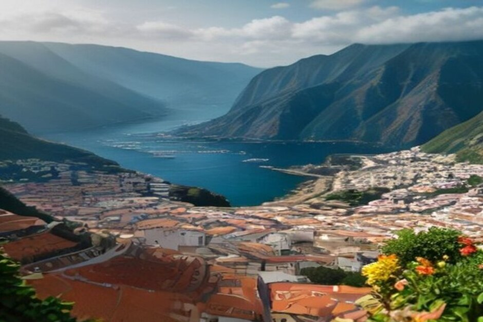

Quem procura recordações da ilha da Madeira quase nunca quer mais um íman. Quer algo que tenha mesmo nascido cá, que sobreviva à viagem de avião e que, daqui a um ano, ainda cheire a ilha. Nem tudo o que está à venda na zona turística do Funchal cumpre isso: parte vem do continente ou de mais longe. Aqui ficam dez coisas verdadeiras, agrupadas pelo que se faz com elas, com o sítio onde as encontrar e o que convém saber antes de fechar a mala.
Como separar o que é da ilha do que só está na montra
Há uma regra simples: se foi bordado, tecido, destilado ou cultivado na Madeira, é madeirense. Se está embalado com uma paisagem e não diz onde foi feito, desconfie.
Duas pistas ajudam logo. No bordado, procure o pequeno selo de chumbo do IBTAM, o instituto que certifica o bordado da ilha. No vinho e nos licores, prefira a loja do próprio produtor ou uma garrafeira com oferta larga, em vez das poucas bancas do aeroporto.
Dito isto, a maior parte desta lista compra-se melhor no centro do Funchal, sem pressa, do que à saída.
Para beber: vinho Madeira, poncha e licores
1. Vinho Madeira
É a recordação mais ligada à ilha. Trata-se de um vinho fortificado que é aquecido de propósito durante o envelhecimento, pela estufagem ou pelo método mais lento do canteiro. É por isso que aguenta semanas depois de aberto sem se estragar, o que o torna uma boa garrafa para quem não bebe tudo de uma vez.
Vale a pena entrar numa casa de produtor na zona velha e provar antes de escolher. A Blandy's, a Barbeito e a Henriques & Henriques fazem provas.
2. Um kit de poncha
Aguardente de cana, mel, limão e o pilão de madeira para os esmagar: é tudo o que precisa para refazer a poncha em casa. Diz-se que a bebida nasceu em Câmara de Lobos, e é nas pequenas tascas junto ao porto que ainda se encontram estes ingredientes juntos. Quem sair do Funchal de barco passa por lá, e pode ver a baía de onde vem a tradição. Veja o passeio de dia.
3. Licores de maracujá, anona e banana
Os socalcos quentes da costa sul dão maracujá, anona e a pequena banana da ilha, e os três chegam à prateleira em forma de licor, ao lado do vinho. Têm menos álcool e custam menos do que uma garrafa de vinho Madeira, por isso são ideais para as prendas de última hora.
Para comer: bolo de mel e mel-de-cana
4. Bolo de mel
O bolo de mel madeirense leva melaço de cana, não mel de abelha, e era feito para durar meses sem frigorífico. Por isso é dos poucos doces locais que chegam inteiros a casa depois de um voo longo. Vende-se inteiro ou em porções embaladas no Mercado dos Lavradores e na maioria das pastelarias do Funchal.
5. Mel-de-cana
Apesar do nome, não tem mel de abelha: é o xarope escuro e espesso de cana-de-açúcar que dá o doce à poncha e ao bolo de mel. Encontra-se engarrafado nas mercearias e nos mercados do Funchal e conserva-se indefinidamente. Se a mala está cheia, pesa muito menos do que uma garrafa de aguardente.
Para a casa: bordado, vime, azulejos e uma miniatura
6. Bordado Madeira
O bordado branco da ilha é feito inteiramente à mão, em linho, organdi ou algodão. Toalhas de mesa, lenços e vestidos de batizado só valem pelo que prometem se tiverem o selo de chumbo do IBTAM. Sem ele, e em bancas ao ar livre, é quase sempre importação feita à máquina. Procure uma casa de bordados especializada no centro do Funchal.
7. Vime de Camacha
Camacha, uma vila de encosta acima do Funchal, vive do vime desde o século XIX, e é lá que se tece a maior parte do que se vende por toda a ilha, de cestos a poltronas. A oficina da própria vila tem a gama mais fresca e envia as peças maiores, para quem não consegue levar uma cadeira como bagagem de mão.
8. Azulejos pintados à mão
Alguns ateliers da zona velha pintam pequenos azulejos por encomenda, com o nome da rua, o número da porta ou uma cena dos telhados do Funchal. Levam uns dias a cozer e a acabar, por isso encomende logo no início da estadia. Pesam mais do que um bordado, mas seguem planos na mala.
9. Uma miniatura de carro de cesto
As mesmas oficinas de Camacha que constroem os carros de cesto verdadeiros fazem pequenos modelos em vime e madeira. São uma forma compacta e inconfundível de trazer a descida do Monte, que a maioria dos visitantes só faz uma vez.
Uma recordação viva: a estrelícia
10. Estrelícia, ou ave-do-paraíso
A Madeira chama-se a si própria Ilha das Flores, e a estrelícia é a flor mais conhecida. Nas bancas junto ao Mercado dos Lavradores vendem-na em caixas preparadas para viajar, e dura semanas. É das poucas recordações vivas que as companhias aéreas já estão habituadas a ver despachadas.
Compras nos três dias que tem no Funchal
Quem pesquisa o que visitar no Funchal em 3 dias raramente reserva uma manhã só para compras, e não precisa. As recordações encaixam no caminho.
- Primeiro dia, zona velha e Mercado dos Lavradores: aqui estão o bolo de mel, o mel-de-cana, a estrelícia e as casas de produtores de vinho. Faça a prova e fique a conhecer os preços.
- Segundo dia, Monte e Camacha: é o dia do vime, da miniatura do carro de cesto e das encomendas que demoram a ficar prontas, como os azulejos.
- Terceiro dia, o que ficou por comprar: volte ao centro para o bordado com selo, os licores e o vinho que escolheu no primeiro dia. Deixe o terceiro dia para decidir, não para descobrir.

Se quiser ver a costa de que vem metade destes produtos, o passeio de barco faz parte da mesma viagem. A Chifbay sai da Marina do Funchal, cais C, com o barco só para o seu grupo (até 5 pessoas), e inclui comida e bebidas a bordo. O passeio de dia passa por Câmara de Lobos e pelo Cabo Girão. O pôr do sol é mais curto e não tem paragem para banho. Os preços são para o barco inteiro. Veja todas as experiências.
Curral das Freiras: castanha em vez de recordação de plástico
Quem sobe ao Curral das Freiras costuma perguntar onde comer, e a resposta vem com a castanha: é a especialidade do vale, em sopa, em bolo e em licor. Não dou nomes de restaurantes, porque as casas mudam e convém perguntar no local. Para a mala, o licor de castanha é uma recordação que só se encontra com facilidade nesta zona da ilha. Pergunte se é produzido localmente antes de comprar.
Se não foi bordado, tecido, destilado ou cultivado na ilha, não é uma recordação da Madeira: é só algo que calhou estar à venda por lá.
Como levar tudo na mala
O vinho, os licores, a poncha e os kits com aguardente vão na bagagem de porão: acima de 100 ml, as regras internacionais para líquidos aplicam-se na bagagem de mão, e as companhias aéreas têm os seus limites de peso. Embrulhe as garrafas em roupa.
O bordado e os azulejos vão melhor na bagagem de mão, onde não são esmagados. Deixe espaço de sobra, porque a maior parte desta lista encontra-se mais facilmente no centro do Funchal do que no aeroporto.
Para outras ideias de como aproveitar a estadia, leia o Diário e a página de informações práticas.